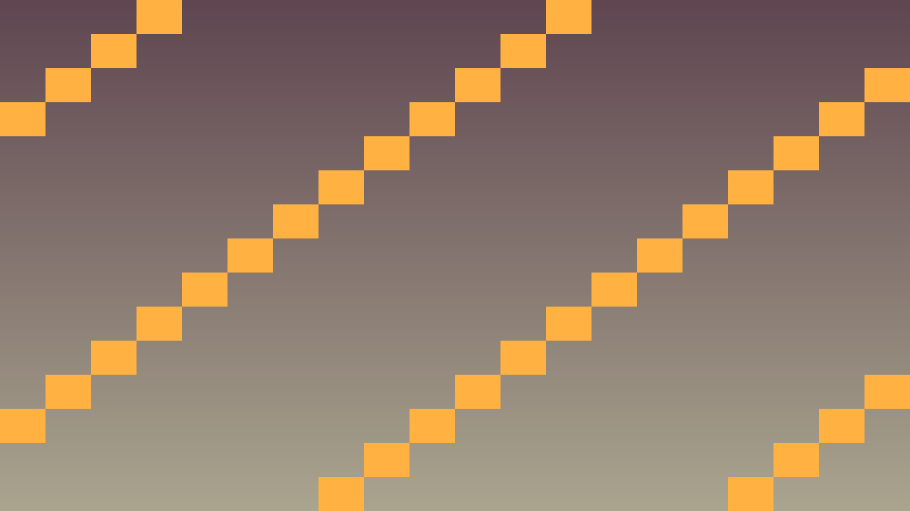

Tavs šīs stundas izaicinājums: Apgūt Big O notāciju un optimizēt spēles algoritmus.
Big O notācija apraksta, kā algoritma laiks pieaug ar datu apjomu.
| O | Apraksts | Piemērs |
|---|---|---|
| O(1) | Konstants | Direct array access |
| O(log n) | Logaritmisks | Binary search |
| O(n) | Lineārs | Iteration |
| O(n log n) | Linearitmisks | Quicksort, Mergesort |
| O(n²) | Kvadrātisks | Nested loops |
| O(2^n) | Eksponenciāls | Brute force search |
// O(n) - lineārs
for (int i = 0; i < n; i++) {
cout << arr[i];
}
// O(n²) - kvadrātisks (slikti lielam n)
for (int i = 0; i < n; i++) {
for (int j = 0; j < n; j++) {
if (arr[i] == arr[j]) ...
}
}
// O(log n) - bināra meklēšana
int binary_search(vector<int>& arr, int target) {
int lo = 0, hi = arr.size() - 1;
while (lo <= hi) {
int mid = (lo + hi) / 2;
if (arr[mid] == target) return mid;
if (arr[mid] < target) lo = mid + 1;
else hi = mid - 1;
}
return -1;
}Mēri, kur ir bottleneck.
Time::get_singleton()->get_ticks_usec() laika mērīšanai.Spatial hashing.
Aprēķini reizi, lieto vairākas reizes.
Multithreading Godot.

// Spatial hash priekš ātras kolīzijas
class SpatialHash {
private:
static const int CELL_SIZE = 64;
std::unordered_map<int64_t, std::vector<Node2D*>> grid;
int64_t cell_key(int cx, int cy) {
return ((int64_t)cx << 32) | (uint32_t)cy;
}
public:
void rebuild(const std::vector<Node2D*>& objects) {
grid.clear();
for (Node2D* obj : objects) {
Vector2 pos = obj->get_position();
int cx = pos.x / CELL_SIZE;
int cy = pos.y / CELL_SIZE;
grid[cell_key(cx, cy)].push_back(obj);
}
}
std::vector<Node2D*> get_nearby(Vector2 pos) {
int cx = pos.x / CELL_SIZE;
int cy = pos.y / CELL_SIZE;
std::vector<Node2D*> result;
for (int dx = -1; dx <= 1; dx++) {
for (int dy = -1; dy <= 1; dy++) {
auto it = grid.find(cell_key(cx + dx, cy + dy));
if (it != grid.end()) {
result.insert(result.end(),
it->second.begin(), it->second.end());
}
}
}
return result;
}
};